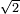

Decibel
| dB | power ratio | amplitude ratio | ||
|---|---|---|---|---|
| 100 | 10 000 000 000 | 100 000 | ||
| 90 | 1 000 000 000 | 31 620 | ||
| 80 | 100 000 000 | 10 000 | ||
| 70 | 10 000 000 | 3 162 | ||
| 60 | 1 000 000 | 1 000 | ||
| 50 | 100 000 | 316 | .2 | |
| 40 | 10 000 | 100 | ||
| 30 | 1 000 | 31 | .62 | |
| 20 | 100 | 10 | ||
| 10 | 10 | 3 | .162 | |
| 0 | 1 | 1 | ||
| -10 | 0 | .1 | 0 | .316 2 |
| -20 | 0 | .01 | 0 | .1 |
| -30 | 0 | .001 | 0 | .031 62 |
| -40 | 0 | .000 1 | 0 | .01 |
| -50 | 0 | .000 01 | 0 | .003 162 |
| -60 | 0 | .000 001 | 0 | .001 |
| -70 | 0 | .000 000 1 | 0 | .000 316 2 |
| -80 | 0 | .000 000 01 | 0 | .000 1 |
| -90 | 0 | .000 000 001 | 0 | .000 031 62 |
| -100 | 0 | .000 000 000 1 | 0 | .000 01 |
| An example scale showing power ratios x and amplitude ratios x and dB equivalents 10 log10 x. It is easier to grasp and compare 2- or 3-digit numbers than to compare up to 10 digits. | ||||
The decibel (dB) is a logarithmic unit that indicates the ratio of a physical quantity (usually power or intensity) relative to a specified or implied reference level. A ratio in decibels is ten times the logarithm to base 10 of the ratio of two power quantities.[1] A decibel is one tenth of a bel, a seldom-used unit.
The decibel is used for a wide variety of measurements in science and engineering, most prominently in acoustics, electronics, and control theory. In electronics, the gains of amplifiers, attenuation of signals, and signal-to-noise ratios are often expressed in decibels. The decibel confers a number of advantages, such as the ability to conveniently represent very large or small numbers, and the ability to carry out multiplication of ratios by simple addition and subtraction.
The decibel symbol is often qualified with a suffix, that indicates which reference quantity or frequency weighting function has been used. For example, dBm indicates a reference level of one milliwatt, while dBu is referenced to 0.775 volts RMS.[2]
The definitions of the decibel and bel use base 10 logarithms. The neper, an alternative logarithmic ratio unit sometimes used, uses the natural logarithm (base e).[3]
A change in power ratio by a factor of 10 is a 10 dB change. A change in power ratio by a factor of two is approximately a 3 dB change.
Contents[hide] |
[edit] History
The decibel originates from methods used to quantify reductions in audio levels in telephone circuits. These losses were originally measured in units of Miles of Standard Cable (MSC), where 1 MSC corresponded to the loss of power over a 1 mile (approximately 1.6 km) length of standard telephone cable at a frequency of 5000 radians per second (795.8 Hz), and roughly matched the smallest attenuation detectable to the average listener. Standard telephone cable was defined as "a cable having uniformly distributed resistance of 88 ohms per loop mile and uniformly distributed shunt capacitance of .054 microfarad per mile" (approximately 19 gauge).[4]
The transmission unit (TU) was devised by engineers of the Bell Telephone Laboratories in the 1920s to replace the MSC. 1 TU was defined as ten times the base-10 logarithm of the ratio of measured power to a reference power level.[5] The definitions were conveniently chosen such that 1 TU approximately equaled 1 MSC (specifically, 1.056 TU = 1 MSC).[6] In 1928, the Bell system renamed the TU the decibel.[7] Along with the decibel, the Bell System defined the bel, the base-10 logarithm of the power ratio, in honor of their founder and telecommunications pioneer Alexander Graham Bell.[8] The bel is seldom used, as the decibel was the proposed working unit.[9]
The naming and early definition of the decibel is described in the NBS Standard's Yearbook of 1931:[10]
Since the earliest days of the telephone, the need for a unit in which to measure the transmission efficiency of telephone facilities has been recognized. The introduction of cable in 1896 afforded a stable basis for a convenient unit and the "mile of standard" cable came into general use shortly thereafter. This unit was employed up to 1923 when a new unit was adopted as being more suitable for modern telephone work. The new transmission unit is widely used among the foreign telephone organizations and recently it was termed the "decibel" at the suggestion of the International Advisory Committee on Long Distance Telephony.
The decibel may be defined by the statement that two amounts of power differ by 1 decibel when they are in the ratio of 100.1 and any two amounts of power differ by N decibels when they are in the ratio of 10N(0.1). The number of transmission units expressing the ratio of any two powers is therefore ten times the common logarithm of that ratio. This method of designating the gain or loss of power in telephone circuits permits direct addition or subtraction of the units expressing the efficiency of different parts of the circuit...
In April 2003, the International Committee for Weights and Measures (CIPM) considered a recommendation for the decibel's inclusion in the International System of Units (SI), but decided not to adopt the decibel as an SI unit.[11] However, the decibel is recognized by other international bodies such as the International Electrotechnical Commission (IEC).[12] The IEC permits the use of the decibel with field quantities as well as power and this recommendation is followed by many national standards bodies, such as NIST, which justifies the use of the decibel for voltage ratios.[13]
[edit] Definition
A decibel (dB) is one tenth of a bel (B), i.e. 1B = 10dB. The bel represents a ratio between two power quantities of 10:1, and a ratio between two field quantities of .[14] A field quantity is a quantity such as voltage, current, sound pressure, electric field strength, velocity and charge density, the square of which in linear systems is proportional to power. A power quantity is a power or a quantity directly proportional to power, e.g. energy density, acoustic intensity and luminous intensity.
The calculation of the ratio in decibels varies depending on whether the quantity being measured is a power quantity or a field quantity.
Two signals that differ by one decibel have a power ratio of 1.25892 (or ) and an amplitude ratio of 1.12202 (or ).[15]
[edit] Power quantities
When referring to measurements of power or intensity, a ratio can be expressed in decibels by evaluating ten times the base-10 logarithm of the ratio of the measured quantity to the reference level. Thus, the ratio of a power value P1 to another power value P0 is represented by LdB, that ratio expressed in decibels,[16] which is calculated using the formula:
The base-10 logarithm of the ratio of the two power levels is the number of bels. The number of decibels is ten times the number of bels (equivalently, a decibel is one-tenth of a bel). P1 and P0 must measure the same type of quantity, and have the same units before calculating the ratio. If P1 = P0 in the above equation, then LdB = 0. If P1 is greater than P0 then LdB is positive; if P1 is less than P0 then LdB is negative.
Rearranging the above equation gives the following formula for P1 in terms of P0 and LdB:
- .
Since a bel is equal to ten decibels, the corresponding formulae for measurement in bels (LB) are
- .
[edit] Field quantities
When referring to measurements of field amplitude it is usual to consider the ratio of the squares of A1 (measured amplitude) and A0 (reference amplitude). This is because in most applications power is proportional to the square of amplitude, and it is desirable for the two decibel formulations to give the same result in such typical cases. Thus the following definition is used:
The equivalence of and is one of the standard properties of logarithms.
The formula may be rearranged to give
Similarly, in electrical circuits, dissipated power is typically proportional to the square of voltage or current when the impedance is held constant. Taking voltage as an example, this leads to the equation:
where V1 is the voltage being measured, V0 is a specified reference voltage, and GdB is the power gain expressed in decibels. A similar formula holds for current.
[edit] Examples
All of these examples yield dimensionless answers in dB because they are relative ratios expressed in decibels. Note that the unit "dBW" is often used to denote a ratio where the reference is 1 W, and similarly "dBm" for a 1 mW reference point.
- To calculate the ratio of 1 kW (one kilowatt, or 1000 watts) to 1 W in decibels, use the formula
- To calculate the ratio of to in decibels, use the formula
Notice that , illustrating the consequence from the definitions above that has the same value, , regardless of whether it is obtained from powers or from amplitudes, provided that in the specific system being considered power ratios are equal to amplitude ratios squared.
- To calculate the ratio of 1 mW (one milliwatt) to 10 W in decibels, use the formula
- To find the power ratio corresponding to a 3 dB change in level, use the formula
A change in power ratio by a factor of 10 is a 10 dB change. A change in power ratio by a factor of two is approximately a 3 dB change. More precisely, the factor is 103/10, or 1.9953, about 0.24% different from exactly 2. Similarly, an increase of 3 dB implies an increase in voltage by a factor of approximately , or about 1.41, an increase of 6 dB corresponds to approximately four times the power and twice the voltage, and so on. In exact terms the power ratio is 106/10, or about 3.9811, a relative error of about 0.5%.
[edit] Merits
The use of the decibel has a number of merits:
- The decibel's logarithmic nature means that a very large range of ratios can be represented by a convenient number, in a similar manner to scientific notation. This allows one to clearly visualize huge changes of some quantity. (See Bode Plot and half logarithm graph.)
- The overall gain of a multi-component system (such as consecutive amplifiers) can be calculated by summing the decibel gains of the individual components, rather than multiply the amplification factors (i.e. log(A B C) = log(A) + log(B) + log(C)).
- The human perception of the intensity of, for example, sound or light, is more nearly proportional to the logarithm of intensity than to the intensity itself, per the WeberFechner law, so the dB scale can be useful to describe perceptual levels or level differences.
[edit] Uses
[edit] Acoustics
The decibel is commonly used in acoustics to quantify sound levels relative to a 0 dB reference which has been defined as a sound pressure level of .0002 microbar, or 20 micropascals.[17] The reference level is set at the typical threshold of perception of an average human and there are common comparisons used to illustrate different levels of sound pressure. As with other decibel figures, normally the ratio expressed is a power ratio (rather than a pressure ratio).
The human ear has a large dynamic range in audio perception. The ratio of the sound intensity that causes permanent damage during short exposure to the quietest sound that the ear can hear is greater than or equal to 1 trillion.[18] Such large measurement ranges are conveniently expressed in logarithmic units: the base-10 logarithm of one trillion (1012) is 12, which is expressed as an audio level of 120 dB. Since the human ear is not equally sensitive to all sound frequencies, noise levels at maximum human sensitivitysomewhere between 2 and 4 kHzare factored more heavily into some measurements using frequency weighting. (See also Stevens' power law.)
[edit] Electronics
In electronics, the decibel is often used to express power or amplitude ratios (gains), in preference to arithmetic ratios or percentages. One advantage is that the total decibel gain of a series of components (such as amplifiers and attenuators) can be calculated simply by summing the decibel gains of the individual components. Similarly, in telecommunications, decibels denote signal gain or loss from a transmitter to a receiver through some medium (free space, waveguide, coax, fiber optics, etc.) using a link budget.
The decibel unit can also be combined with a suffix to create an absolute unit of electric power. For example, it can be combined with "m" for "milliwatt" to produce the "dBm". Zero dBm equals one milliwatt, and 1 dBm is one decibel greater (about 1.259 mW).
In professional audio, a popular unit is the dBu (see below for all the units). The "u" stands for "unloaded", and was probably chosen to be similar to lowercase "v", as dBv was the older name for the same thing. It was changed to avoid confusion with dBV. This unit (dBu) is an RMS measurement of voltage which uses as its reference 0.775 VRMS. Chosen for historical reasons, it is the voltage level which delivers 1 mW of power in a 600 ohm resistor, which used to be the standard reference impedance in telephone audio circuits.
[edit] Optics
In an optical link, if a known amount of optical power, in dBm (referenced to 1 mW), is launched into a fiber, and the losses, in dB (decibels), of each electronic component (e.g., connectors, splices, and lengths of fiber) are known, the overall link loss may be quickly calculated by addition and subtraction of decibel quantities.[19]
In spectrometry and optics, the blocking unit used to measure optical density is equivalent to 1 B.
[edit] Video and digital imaging
In connection with video and digital image sensors, decibels generally represent ratios of video voltages or digitized light levels, using 20 log of the ratio, even when the represented optical power is directly proportional to the voltage or level, not to its square, as in a CCD imager where response voltage is linear in intensity.[20] Thus, a camera signal-to-noise ratio or dynamic range of 40 dB represents a power ratio of 100:1 between signal power and noise power, not 10,000:1.[21] Sometimes the 20 log ratio definition is applied to electron counts or photon counts directly, which are proportional to intensity without the need to consider whether the voltage response is linear.[22]
However, as mentioned above, the 10 log intensity convention prevails more generally in physical optics, including fiber optics, so the terminology can become murky between the conventions of digital photographic technology and physics. Most commonly, quantities called "dynamic range" or "signal-to-noise" (of the camera) would be specified in 20 log dBs, but in related contexts (e.g. attenuation, gain, intensifier SNR, or rejection ratio) the term should be interpreted cautiously, as confusion of the two units can result in very large misunderstandings of the value.
Photographers also often use an alternative base-2 log unit, the f-stop, and in software contexts these image level ratios, particularly dynamic range, are often loosely referred to by the number of bits needed to represent the quantity, such that 60 dB (digital photographic) is roughly equal to 10 f-stops or 10 bits, since 103 is nearly equal to 210.
[edit] Suffixes and reference levels
Suffixes are commonly attached to the basic dB unit in order to indicate the reference level against which the decibel measurement is taken. For example, dBm indicates power measurement relative to 1 milliwatt.
In cases such as this, where the numerical value of the reference is explicitly and exactly stated, the decibel measurement is called an "absolute" measurement, in the sense that the exact value of the measured quantity can be recovered using the formula given earlier. If the numerical value of the reference is not explicitly stated, as in the dB gain of an amplifier, then the decibel measurement is purely relative.
The SI does not permit attaching qualifiers to units, whether as suffix or prefix, other than standard SI prefixes. Therefore, even though the decibel is accepted for use alongside SI units, the practice of attaching a suffix to the basic dB unit, forming compound units such as dBm, dBu, dBA, etc., is not.[23] However, outside of documents adhering to SI units, the practice is very common as illustrated by the following examples.
[edit] Voltage
Since the decibel is defined with respect to power, not amplitude, conversions of voltage ratios to decibels must square the amplitude, as discussed above.
{kind=link}
dBV
dBu or dBv
- dB(0.775 VRMS) voltage relative to 0.775 volts.[2] Originally dBv, it was changed to dBu to avoid confusion with dBV.[24] The "v" comes from "volt", while "u" comes from "unloaded". dBu can be used regardless of impedance, but is derived from a 600 load dissipating 0 dBm (1 mW). Reference voltage
In professional audio, equipment may be calibrated to indicate a "0" on the VU meters some finite time after a signal has been applied at an amplitude of +4 dBu. Consumer equipment will more often use a much lower "nominal" signal level of -10 dBV.[25] Therefore, many devices offer dual voltage operation (with different gain or "trim" settings) for interoperability reasons. A switch or adjustment that covers at least the range between +4 dBu and -10 dBV is common in professional equipment.
dBmV
- dB(1 mVRMS) voltage relative to 1 millivolt across 75 .[26] Widely used in cable television networks, where the nominal strength of a single TV signal at the receiver terminals is about 0 dBmV. Cable TV uses 75 coaxial cable, so 0 dBmV corresponds to 78.75 dBW (48.75 dBm) or ~13 nW.
dBV or dBuV
- dB(1 VRMS) voltage relative to 1 microvolt. Widely used in television and aerial amplifier specifications. 60 dBV = 0 dBmV.
[edit] Acoustics
Probably the most common usage of "decibels" in reference to sound loudness is dB SPL, sound pressure level referenced to the nominal threshold of human hearing:[27]
dB(SPL)
- dB (sound pressure level) for sound in air and other gases, relative to 20 micropascals (Pa) = 2105 Pa, the quietest sound a human can hear. This is roughly the sound of a mosquito flying 3 meters away. This is often abbreviated to just "dB", which gives some the erroneous notion that "dB" is an absolute unit by itself. For sound in water and other liquids, a reference pressure of 1 Pa is used.[28]
One Pascal is equal to 94 dB(SPL). This level is used to specify microphone sensitivity. For example, a typical microphone may put out 20 mV at one pascal. For other sound pressure levels, the output voltage can be computed from this basis, except that noise and distortion will affect the extreme levels.
dB(PA)
- dB relative to 1 Pa, often used in telecommunications.[citation needed]
dB SIL
- dB sound intensity level relative to 1012 W/m2, which is roughly the threshold of human hearing in air.
dB SWL
- dB sound power level relative to 1012 W.
dB(A), dB(B), and dB(C)
- These symbols are often used to denote the use of different weighting filters, used to approximate the human ear's response to sound, although the measurement is still in dB (SPL). These measurements usually refer to noise and noisome effects on humans and animals, and are in widespread use in the industry with regard to noise control issues, regulations and environmental standards. Other variations that may be seen are dBA or dBA. According to ANSI standards, the preferred usage is to write LA = x dB. Nevertheless, the units dBA and dB(A) are still commonly used as a shorthand for A-weighted measurements. Compare dBc, used in telecommunications.
dB HL or dB hearing level is used in audiograms as a measure of hearing loss. The reference level varies with frequency according to a minimum audibility curve as defined in ANSI and other standards, such that the resulting audiogram shows deviation from what is regarded as 'normal' hearing.[citation needed]
dB Q is sometimes used to denote weighted noise level, commonly using the ITU-R 468 noise weighting[citation needed]
[edit] Audio electronics
- dB(mW) power relative to 1 milliwatt. No reference impedance is assumed, although 600 ohms is common in audio equipment.
- dB(full scale) the amplitude of a signal compared with the maximum which a device can handle before clipping occurs. Full-scale may be defined as the power level of a full-scale sinusoid or alternatively a full-scale square wave.
dBTP
- dB(true peak) - peak amplitude of a signal compared with the maximum which a device can handle before clipping occurs.[29] In digital systems, 0 dBTP would equal the highest level (number) the processor is capable of representing. Measured values are always negative or zero, since they are less than or equal to full-scale.
[edit] Radar
- dB(Z) energy of reflectivity (weather radar), related to the amount of transmitted power returned to the radar receiver; the reference level for Z is 1 mm6 m3. Values above 1520 dBZ usually indicate falling precipitation.[30]
dBsm
- dBsm decibel measure of the radar cross section (RCS) of a target relative one square meter. The power reflected by the target is proportional to its RCS. "Stealth" aircraft and insects have negative RCS measured in dBsm, large flat plates or non-stealthy aircraft have positive values.[31]
[edit] Radio power, energy, and field strength
- dBc relative to carrierin telecommunications, this indicates the relative levels of noise or sideband peak power, compared with the carrier power. Compare dBC, used in acoustics.
dBJ
- dB(J) energy relative to 1 joule. 1 joule = 1 watt per hertz, so power spectral density can be expressed in dBJ.
- dB(mW) power relative to 1 milliwatt. When used in the radio field, the dB is usually referenced to a 50 ohm load, with the resultant voltage being 0.224 volts. There are times when spec sheets may show the voltage & power level e.g. 120 dBm = 0.224 microvolts.
dBV/m or dBuV/m
- dB(V/m) electric field strength relative to 1 microvolt per meter. Often used to specify the signal strength from a television broadcast at a receiving site (the signal measured at the antenna output will be in dBV).
dBf
- dB(fW) power relative to 1 femtowatt.
dBW
- dB(W) power relative to 1 watt.
dBk
- dB(kW) power relative to 1 kilowatt.
[edit] Antenna measurements
dBi
- dB(isotropic) the forward gain of an antenna compared with the hypothetical isotropic antenna, which uniformly distributes energy in all directions. Linear polarization of the EM field is assumed unless noted otherwise.
dBd
- dB(dipole) the forward gain of an antenna compared with a half-wave dipole antenna. 0 dBd = 2.15 dBi
dBiC
- dB(isotropic circular) the forward gain of an antenna compared to a circularly polarized isotropic antenna. There is no fixed conversion rule between dBiC and dBi, as it depends on the receiving antenna and the field polarization.
dBq
- dB(quarterwave) the forward gain of an antenna compared to a quarter wavelength whip. Rarely used, except in some marketing material. 0 dBq = 0.85 dBi
[edit] Other measurements
dB-Hz
- dB(hertz) bandwidth relative to 1 Hz. E.g., 20 dB-Hz corresponds to a bandwidth of 100 Hz. Commonly used in link budget calculations. Also used in carrier-to-noise-density ratio (not to be confused with carrier-to-noise ratio, in dB).
dBov or dBO
- dB(overload) the amplitude of a signal (usually audio) compared with the maximum which a device can handle before clipping occurs. Similar to dBFS, but also applicable to analog systems.
dBr
- dB(relative) simply a relative difference from something else, which is made apparent in context. The difference of a filter's response to nominal levels, for instance.
- dB above reference noise. See also dBrnC.
[edit] See also
- Apparent magnitude
- Cent in music
- dB drag racing
- Equal-loudness contour
- Noise (environmental)
- Phon
- Richter magnitude scale
- Signal noise
- Weighting filterdiscussion of dBA
[edit] References
- ^ IEEE Standard 100 Dictionary of IEEE Standards Terms, Seventh Edition, The Institute of Electrical and Electronics Engineering, New York, 2000; ISBN 0-7381-2601-2; page 288
- ^ a b c Analog Devices : Virtual Design Center : Interactive Design Tools : Utilities : VRMS / dBm / dBu / dBV calculator
- ^ The International System of Units (SI).
- ^ Kenneth Simonds Johnson (1944). Transmission circuits for telephonic communication: methods of analysis and design. D. Van Nostrand Co.. p. 10.
- ^ Don Davis and Carolyn Davis (1997). Sound system engineering (2nd ed.). Focal Press. p. 35. ISBN 978-0-240-80305-0. http://books.google.co.uk/books?id=9mAUp5IC5AMC&pg=PA35.
- ^ Bell Labs (1925). Transmission Circuits for Telephonic Communication.
- ^ R. V. L. Hartley (Dec. 1928). "'TU' becomes 'Decibel'". Bell Laboratories Record (AT&T) 7 (4): 137139. http://books.google.com/books?id=h1ciAQAAIAAJ&q=decibel+bel&dq=decibel+bel.
- ^ Martin, W. H. (January 1929). "DeciBelThe New Name for the Transmission Unit". Bell System Technical Journal 8 (1).
- ^ 100 Years of Telephone Switching, p. 276, Robert J. Chapuis, Amos E. Joel, 2003
- ^ William H. Harrison (1931). "Standards for Transmission of Speech". Standards Yearbook (National Bureau of Standards, U. S. Govt. Printing Office) 119
- ^ Consultative Committee for Units, Meeting minutes, Section 3
- ^ "Letter symbols to be used in electrical technology Part 3: Logarithmic and related quantities, and their units", IEC 60027-3 Ed. 3.0, International Electrotechnical Commission, 19th July 2002.
- ^ A. Thompson and B. N. Taylor, "Comments on Some Quantities and Their Units", The NIST Guide for the use of the International System of Units, National Institute of Standards and Technology, May 1996.
- ^ "International Standard CEI-IEC 27-3 Letter symbols to be used in electrical technology Part 3: Logarithmic quantities and units". International Electrotechnical Commission.
- ^
- Mark, James E., Physical properties of polymers handbook, Springer, 2007, p 1025: " the decibel represents a reduction in power of 1.258 times."
- Schrader , Barry, Introduction to electro-acoustic music, Prentice Hall, 1982, p 23: "An increase of one dB is equal to a multiplication of the intensity level by a factor of about 1.258. "
- Elbert, Bruce, The satellite communication applications handbook, Artech House, 2004, p 30: Table shows "1.0 decibel" is equal to a power ratio of "1.26".
- Tse, Francis (Ed), Measurement and instrumentation in engineering: principles and basic laboratory experiments, CRC Press, 1989, p 208: "In fact, +1 dB is a ratio of 1.12:1"
- Yost, William, Fundamentals of hearing: an introduction, Holt, Rinehart and Winston, 1985, p 206: " a pressure ratio of 1.122 equals +1.0 dB"
- ^ David M. Pozar (2005). Microwave Engineering (3rd ed.). Wiley. p. 63. ISBN 978-0471448785.
- ^ "Electronic Engineer's Handbook" by Donald G. Fink, Editor-in-Chief ISBN 0-07-020980-4 Published by McGraw Hill, page 19-3
- ^ National Institute on Deafness and Other Communications Disorders, Noise-Induced Hearing Loss (National Institutes of Health, 2008).
- ^ Bob Chomycz (2000). Fiber optic installer's field manual. McGraw-Hill Professional. pp. 123126. ISBN 978-0-07-135604-6. http://books.google.com/books?id=B810SYIAa4IC&pg=PA123.
- ^ Stephen J. Sangwine and Robin E. N. Horne (1998). The Colour Image Processing Handbook. Springer. pp. 127130. ISBN 978-0-412-80620-9. http://books.google.com/?id=oEsZiCt5VOAC&pg=PA127&dq=image++db+20-log+video+voltage.
- ^ Francis T. S. Yu and Xiangyang Yang (1997). Introduction to optical engineering. Cambridge University Press. pp. 102103. ISBN 978-0-521-57493-8. http://books.google.com/books?id=RYm7WwjsyzkC&pg=PT120.
- ^ Junichi Nakamura (2006). "Basics of Image Sensors". In Junichi Nakamura. Image sensors and signal processing for digital still cameras. CRC Press. pp. 7983. ISBN 978-0-8493-3545-7. http://books.google.com/books?id=UY6QzgzgieYC&pg=PA79.
- ^ Thompson, A. and Taylor, B. N. Guide for the Use of the International System of Units (SI) 2008 Edition, 2nd printing (November 2008), SP811 PDF
- ^ What is the difference between dBv, dBu, dBV, dBm, dB SPL, and plain old dB? Why not just use regular voltage and power measurements? rec.audio.pro Audio Professional FAQ
- ^ http://www.deltamedia.com/resource/db_or_not_db.html
- ^ The IEEE Standard Dictionary of Electrical and Electronics terms (6th ed.). IEEE. 1996 [1941]. ISBN 1-55937-833-6.
- ^ Jay Rose (2002). Audio postproduction for digital video. Focal Press,. p. 25. ISBN 978-1-57820-116-7. http://books.google.com/?id=sUcRegHAXdkC&pg=PA25&dq=db+almost-always-referring.
- ^ Morfey, C. L. (2001). Dictionary of Acoustics. Academic Press, San Diego.
- ^ ITU-R BS.1770
- ^ "Radar FAQ from WSI". Archived from the original on 2008-05-18. http://web.archive.org/web/20080518035848/http://www.srh.noaa.gov/tsa/radar_faq.html. Retrieved 2008-03-18.
- ^ "Definition at Everything2". http://everything2.com/title/dBsm. Retrieved 2008-08-06.
[edit] External links
- What is a decibel? With sound files and animations
- Conversion of dBu to volts, dBV to volts, and volts to dBu, and dBV
- Conversion of sound level units: dBSPL or dBA to sound pressure p and sound intensity J
- Conversion of voltage V to dB, dBu, dBV, and dBm
- OSHA Regulations on Occupational Noise Exposure
- Vpeak, VRMS, Power, dBm, dBu, dBV online converter at Analog Devices
- Use of the decibel with respect to aerials and aerial systems
|
||
|
|||
{kind=link}